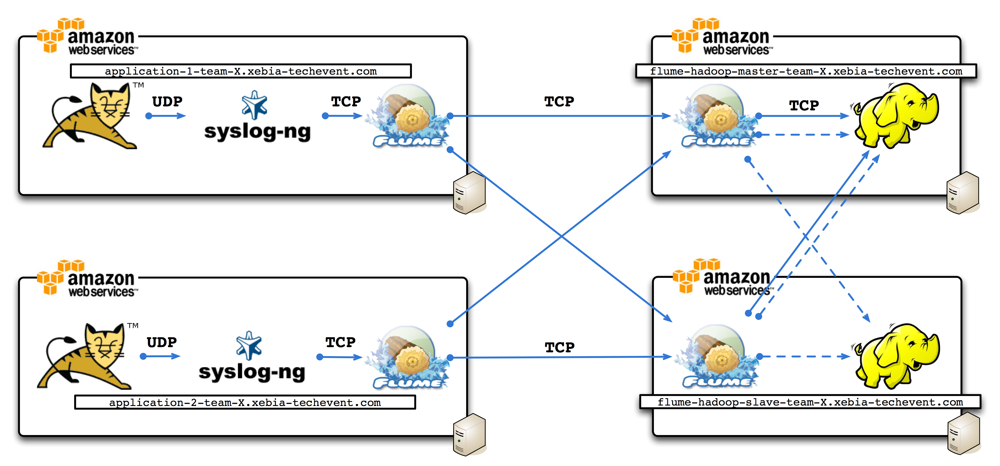

Infrastructure
For this workshop, we provide 4 Amazon EC2 server by team. 2 of this server for Hadoop Cluster and 2 for application.

Your EC2 instance
| Role | user and instance |
|---|---|
| Application 1 | ec2-user@application-team-X-instance-1.xebia-techevent.com |
| Application 2 | ec2-user@application-team-X-instance-2.xebia-techevent.com |
| Hadoop 'master' | ec2-user@flume-hadoop-master-team-X.xebia-techevent.com |
| Hadoop 'slave' | ec2-user@flume-hadoop-slave-team-X.xebia-techevent.com |
Connection to Amazon EC2 (with macos or linux)
$ wget https://s3-eu-west-1.amazonaws.com/xebia-workshop-bigdata/xte-flume.pem
$ ssh -i xte-flume.pem ec2-user@flume-hadoop-master-team-X.xebia-techevent.com
Hadoop configuration
Hadoop is installed as a standard linux application with Cloudera packaging.
| Part of application | Directory |
|---|---|
| configuration | /etc/hadoop/conf |
| Namenode log | /var/log/hadoop-hdfs/hadoop-hdfs-namenode-flume-hadoop-master-team-X.aws.xebiatechevent.info..log |
| Jobtracker log | /var/log/hadoop-hdfs/hadoop-hdfs-jobtracker-flume-hadoop-master-team-X.aws.xebiatechevent.info..log |
| Datanode log | /var/log/hadoop-hdfs/hadoop-hdfs-datanode-flume-hadoop-master-team-X.aws.xebiatechevent.info..log |
| Tasktracker log | /var/log/hadoop-hdfs/hadoop-hdfs-tasktracker-flume-hadoop-master-team-X.aws.xebiatechevent.info..log |
| Binary | /usr/lib/hadoop |
Hadoop Tips and command
- Stop all services :
$ for service in /etc/init.d/hadoop-* ; do sudo $service stop ; done - Start all services :
$ for service in /etc/init.d/hadoop-* ; do sudo $service start ; done - Restart all services :
$ for service in /etc/init.d/hadoop-* ; do sudo $service restart ; done - Restart only datanode :
$ sudo service hadoop-datanode restart - Restart only tasktracker :
$ sudo service hadoop-tasktracker restart - List all file of an hdfs directory :
$ hadoop fs -ls - List all file of an hdfs directory recursively:
$ hadoop fs -lsr - Upload a file to hdfs :
$ hadoop fs -put <local> <dst> - Download a file from hdfs :
$ hadoop fs -get <src> <local> - View file content from hdfs :
$ hadoop fs -cat <file> - Tail file content from hdfs :
$ hadoop fs -tail <file> - Delete a file from hdfs :
$ hadoop fs -rm <file> - Delete a directory from hdfs :
$ hadoop fs -rmr <directory> - View all fs command :
$ hadoop fs
Hadoop web console
- Hadoop HDFS Console :
http://flume-hadoop-master-team-X.aws.xebiatechevent.info:50070/ - Hadoop Job Console :
http://flume-hadoop-master-team-X.aws.xebiatechevent.info:50030/
Flume configuration
Flume is installed as a standard linux application with Cloudera packaging.
| Part of application | Directory |
|---|---|
| configuration | /etc/flume/conf |
| log | /var/log/flume |
| Binary | /usr/lib/flume |
Application Server installation
The application used for generating log is a standard Java Web application deployed in Tomcat. Tomcat generates access log, no apache in front-end. All the applicative log are generated by logback.tomcat and application configuration file
| Part of application | Directory |
|---|---|
| Tomcat home | /usr/share/apache-tomcat-7.0.22/ |
| Tomcat access-log | /usr/share/apache-tomcat-7.0.22/logs/localhost_access_log.YYYY-MM-DD.txt |
| Application log | /usr/share/apache-tomcat-7.0.22/logs/catalina.out |
Tocmat tips
- Stop tomcat service :
$ sudo service tomcat7 stop - Start tomcat service :
$ sudo service tomcat7 start - Restart tomcat service :
$ sudo service tomcat7 restart
Using jmeter for generating load
Change current directory for jmeter binary
cd /root/jakarta-jmeter-2.5.1/bin
Start a script in command line
./jmeter -n -t ../data/xebia-spring-travel.jmx -j jmeter.log
Syslog configuration
For this workshop all syslog-ng configuration is ready. We only describe configuration added by us for this workshop after a clean installation